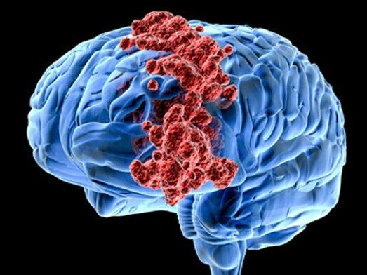
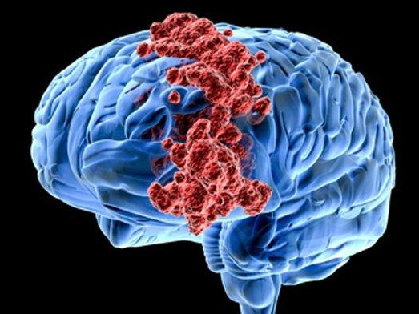

Good Health Is The Root Of All Heppiness
24.530
Brain Cancer
34.000
Lung Cancer
68.858
Breast Cancer
236.765
Prostate Cancer
 }})
 }})
 }})
Brain Cancer
Lung Cancer
Breast Cancer
Prostate Cancer
 }}) 

About Brain Cancer
Kanker otak adalah kanker yang terjadi akibat tumbuhnya sel-sel abnormal dan ganas di dalam otak. Sel-sel kanker tersebut bisa berasal dari otak atau dari organ lain yang menyebar ke otak.
Kanker otak dan tumor otak adalah dua kondisi yang berbeda, walaupun keduanya mirip dan berkaitan, disini akan kita bahas (inti) perbedaan keduanya beserta gejala, penyebab, diagnosis dan pengobatannya.
Tumor otak adalah suatu massa jaringan yang terbentuk akibat dari pertumbuhan sel-sel otak yang abnormal (tidak terkontrol). Tumor adalah istilah umum untuk jaringan yang membentuk massa abnormal.
Sedangkan kanker otak adalah pertumbuhan sel-sel di otak yang abnormal atau tidak terkontrol yang bersifat ganas artinya dapat menyebar dan menyerang organ tubuh lainnya.
Formulir DiagnosaAll Genes
Isositrat dehidrogenase adalah enzim yang berperan dalam siklus asam sitrat (siklus Krebs) di dalam sel. Enzim ini mengkatalisis konversi isositrat menjadi α-ketoglutarat melalui proses oksidatif dekarboksilasi, yang menghasilkan NADH atau NADPH dan melepaskan molekul CO₂.
Tumor protein p53, atau dikenal sebagai p53, adalah protein yang berfungsi sebagai penjaga genom karena perannya dalam menjaga kestabilan sel dengan mencegah mutasi genetik. P53 merupakan faktor transkripsi yang diaktifkan saat sel mengalami stres, seperti kerusakan DNA, hipoksia, atau sinyal pertumbuhan yang tidak normal.
ATRX (Alpha Thalassemia/Mental Retardation Syndrome X-linked) adalah gen yang mengkode protein yang berperan sebagai chromatin remodeler, yakni protein yang berfungsi dalam mengatur struktur kromatin, yang pada gilirannya mempengaruhi ekspresi gen.
Phosphatase and Tensin Homolog (PTEN) adalah gen penekan tumor yang mengkode protein PTEN, yaitu enzim yang berperan penting dalam mengatur pertumbuhan sel, proliferasi, dan kelangsungan hidup. PTEN berfungsi sebagai fosfatase lipid dan protein, yang memodifikasi molekul dengan menghilangkan gugus fosfat dari protein atau lipid tertentu.
Epidermal Growth Factor Receptor (EGFR) adalah protein yang terletak di permukaan sel dan berfungsi sebagai reseptor untuk faktor pertumbuhan yang disebut Epidermal Growth Factor (EGF). EGFR adalah bagian dari keluarga reseptor tirosin kinase, yang berperan penting dalam pengaturan proses vital seperti pertumbuhan, proliferasi, dan diferensiasi sel.
Capicua (CIC) adalah faktor represor transkripsi yang mengatur ekspresi gen dengan menghambat transkripsi gen tertentu. CIC dikenal berperan dalam berbagai proses perkembangan sel dan organisme, terutama dalam jalur sinyal RAS/MAPK. CIC bertindak sebagai penghambat ekspresi gen target dalam jalur ini, menjaga keseimbangan pertumbuhan sel, proliferasi, dan diferensiasi.
Mucin 16 (MUC16) adalah protein yang berada di permukaan sel dan termasuk dalam keluarga mukin, yaitu protein dengan struktur yang sangat kaya akan glikoprotein. MUC16 dikenal karena ukurannya yang sangat besar dan juga perannya sebagai penanda tumor.
Phosphatidylinositol-4,5-bisphosphate 3-kinase catalytic subunit alpha (PIK3CA) adalah gen yang mengkode subunit katalitik dari enzim phosphoinositide 3-kinase (PI3K). PI3K adalah enzim penting dalam regulasi sinyal intraseluler yang mengontrol pertumbuhan, proliferasi, kelangsungan hidup, dan motilitas sel.
Neurofibromin 1 (NF1) adalah protein yang dihasilkan oleh gen NF1, yang berfungsi sebagai penekan tumor. NF1 berperan penting dalam mengatur jalur sinyal seluler yang melibatkan Ras, sebuah protein yang terlibat dalam pengaturan pertumbuhan, diferensiasi, dan kelangsungan hidup sel.
Phosphoinositide-3-kinase regulatory subunit 1 (PIK3R1), juga dikenal sebagai p85α, adalah subunit regulator dari enzim phosphoinositide 3-kinase (PI3K). PIK3R1 berperan penting dalam mengatur aktivitas PI3K, yang merupakan bagian dari jalur sinyal yang mengontrol berbagai fungsi seluler, termasuk pertumbuhan, proliferasi, dan kelangsungan hidup sel.
Far Upstream Element Binding Protein 1 (FUBP1) adalah protein yang berperan sebagai faktor transkripsi dan pengatur ekspresi gen. FUBP1 mengikat elemen far upstream element (FUSE) yang terletak di wilayah promotor gen tertentu, yang memengaruhi transkripsi gen tersebut.
RB Transcriptional Corepressor 1 (RB1) adalah protein yang berperan sebagai penekan tumor dan merupakan bagian dari kompleks yang mengatur transkripsi gen. RB1 dikenal karena fungsinya dalam pengendalian siklus sel dan diferensiasi sel, terutama dalam konteks pencegahan proliferasi sel yang tidak terkendali.
Notch Receptor 1 (NOTCH1) adalah salah satu anggota dari keluarga reseptor Notch, yang berperan penting dalam pengaturan komunikasi seluler dan perkembangan berbagai jenis jaringan dan organ. Reseptor Notch berfungsi sebagai reseptor transmembran yang terlibat dalam jalur sinyal yang memengaruhi diferensiasi sel, proliferasi, dan kelangsungan hidup sel.
BCL6 Corepressor (BCOR) adalah protein yang berfungsi sebagai faktor transkripsi dan corepressor dalam regulasi ekspresi gen. BCOR memainkan peran penting dalam pengaturan diferensiasi sel dan fungsi sel imun, serta dalam perkembangan beberapa jenis jaringan.
CUB and Sushi Multiple Domains 3 (CSMD3) adalah protein yang terlibat dalam pengaturan perkembangan sistem saraf dan interaksi sel. CSMD3 merupakan anggota dari keluarga protein yang memiliki domain CUB (C1r/C1s, Uegf, Bmp1) dan domain Sushi, yang berperan dalam berbagai proses biologis.
SWI/SNF Related, Matrix Associated, Actin Dependent Regulator of Chromatin, Subfamily A, Member 4 (SMARCA4), juga dikenal sebagai BRG1, adalah salah satu subunit dari kompleks SWI/SNF (SWItch/Sucrose Non-Fermentable) yang berperan dalam modifikasi kromatin dan regulasi ekspresi gen. Komplek SWI/SNF berfungsi sebagai remodeler kromatin yang mengubah struktur kromatin untuk memfasilitasi aksesibilitas DNA bagi faktor transkripsi.
Glutamate Ionotropic Receptor NMDA Type Subunit 2A (GRIN2A) adalah salah satu subunit dari reseptor glutamat yang tergolong dalam kelas ionotropik, khususnya reseptor N-Metil-D-Aspartat (NMDA). Reseptor ini sangat penting dalam pengaturan sinyal neurotransmisi di sistem saraf pusat, serta dalam proses pembelajaran dan memori.
Isocitrate Dehydrogenase (NADP(+)) 2 (IDH2) adalah enzim yang terlibat dalam metabolisme seluler, khususnya dalam siklus asam sitrat (siklus Krebs). IDH2 mengkatalisis reaksi dekarboksilasi isositrat menjadi alfa-ketoglutarat, sambil mengubah NADP⁺ menjadi NADPH. NADPH yang dihasilkan memiliki peran penting dalam biosintesis, pemeliharaan keseimbangan redoks, dan perlindungan terhadap stres oksidatif.
FAT Atypical Cadherin 4 (FAT4) adalah anggota dari keluarga cadherin, yang merupakan protein transmembran yang berperan penting dalam pengikatan sel ke sel (cell adhesion) dan pengaturan interaksi antar sel. Cadherin biasanya terlibat dalam menjaga struktur jaringan, pengembangan embrionik, dan proses yang terkait dengan pengaturan pertumbuhan dan diferensiasi sel.
Platelet-Derived Growth Factor Receptor Alpha (PDGFRA) adalah salah satu reseptor yang berfungsi untuk mengikat platelet-derived growth factor (PDGF), yang berperan penting dalam berbagai proses biologis, termasuk pertumbuhan sel, pembentukan pembuluh darah, dan perbaikan jaringan.